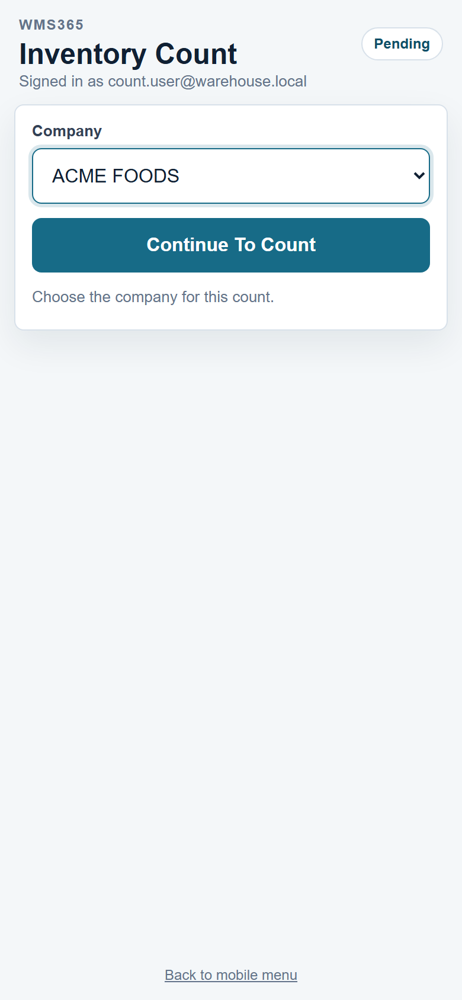
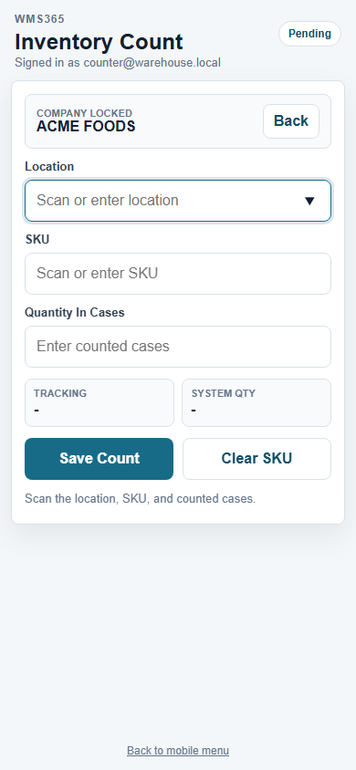
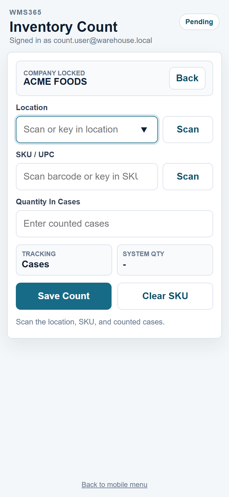
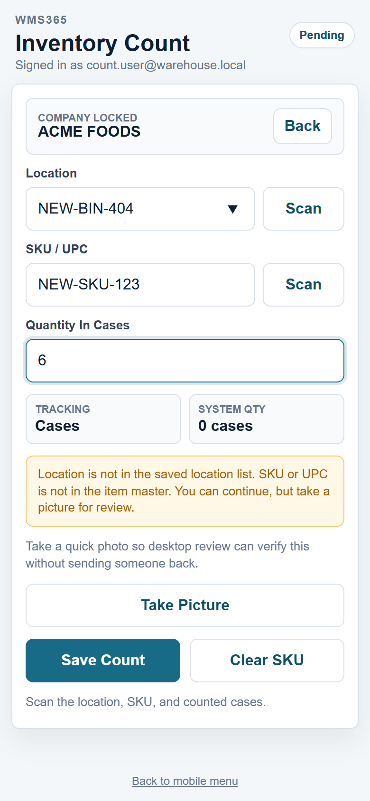
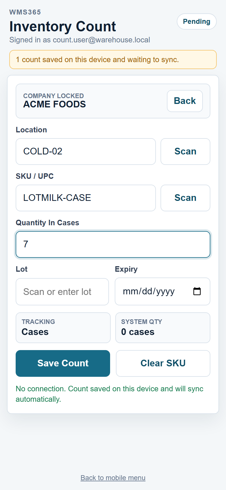
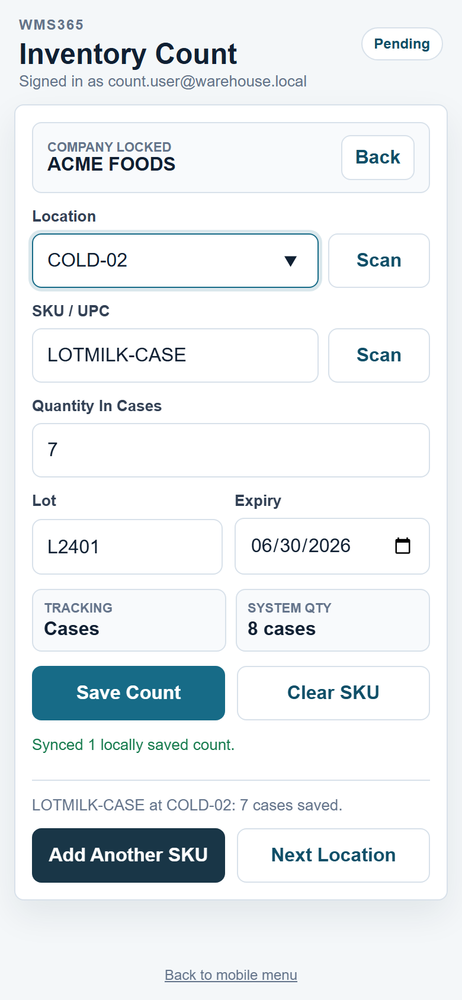
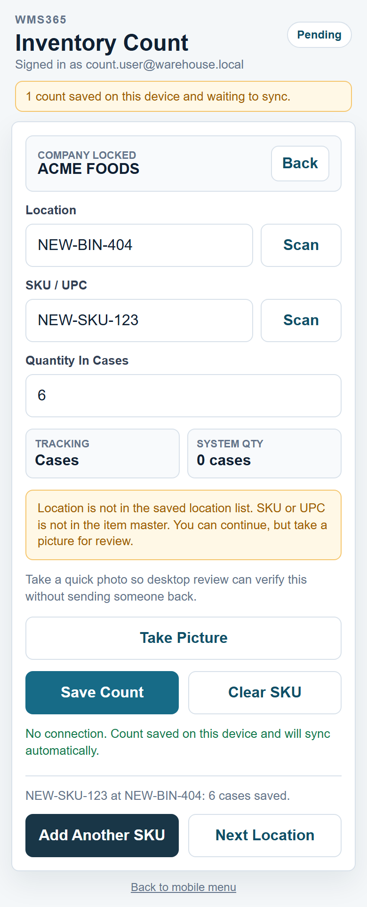
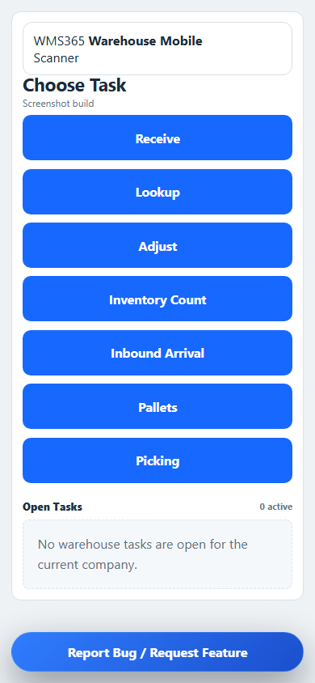

Fast Flow
- Open WMS365 Scanner or the WMS365 mobile web app.
- Sign in with your warehouse login.
- Select the correct Company. The company stays locked for the count.
- Tap Inventory Count.
- Scan or key in the Location.
- Scan or key in the Product / SKU / UPC.
- Enter the counted quantity in cases.
- Enter lot and/or expiry only if the fields appear.
- If location or SKU is not found, take a picture and continue.
- Tap Save Count, then choose another SKU or the next location.
Worker Rules
- Do not switch companies unless a lead tells you to.
- Scan when possible. Key in only if the barcode will not scan.
- If the app shows a warning, take the photo before saving.
- Counts do not change inventory immediately.
- Use Pending to check items waiting to sync or review.
Company lock: After you choose a company, WMS365 keeps that company selected so the count does not get entered under the wrong customer. Use the Back or switch-company option only when you truly need to change companies.
1. Select Company
Choose the customer/company once at the start. This keeps all counts in the right account.

2. Company Stays Locked
The count screen shows the locked company. Use Back only if the company is wrong.

3. Scan Or Key In
Use camera scan for location and product. If scanning fails, type the location or SKU.

4. Warning And Photo
If the location or SKU is not found, WMS365 gives a light warning. Take a picture so the office can verify without sending you back.

Finish The Count
5. Lot And Expiry
Lot and expiry fields only show when required for the item or customer. Fill them in before saving.

6. Save Count
After saving, add another SKU in the same location or move to the next location.

7. Pending / Offline
If Wi-Fi or cell service drops, the app saves the count on the device and syncs when the connection returns.

8. Mobile Menu
Use the mobile menu to move between Inventory Count, Picking, and Pending work.

What happens after Save: The count is submitted as pending. A desktop user reviews location, SKU, counted quantity, system quantity, variance, lot/expiry, worker, and date/time before posting.
Stop and ask a lead when: the wrong company is locked, the product label is damaged, the physical product does not match the SKU, the location is blocked, or the same product appears in two mixed locations.
Quick Checklist Before Leaving A Location
- Every SKU in the location was counted.
- Case quantity was entered correctly.
- Lot and expiry were entered if shown.
- Photo was added for unknown location/SKU or label problems.
- No pending error remains on the device.